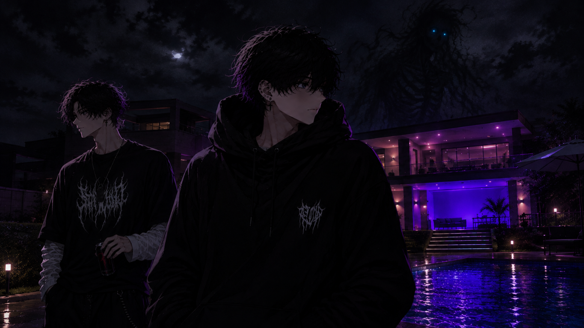

A porta dobrou perto da tranca.
O impacto empurrou Aidem para trás. A borda deformada raspou sua mão; ele soltou um som curto e tornou a apoiar o ombro no metal.
Philip tentou fazer o mesmo. A dor nas costelas o fez perder o ar antes que conseguisse firmar os pés.
— Pega a mesa! — gritou o funcionário.
Dois homens arrastaram a mesa de preparo até a porta. As pernas de metal riscaram o piso e prenderam uma das pontas sob a bancada. O funcionário encaixou o peso do corpo contra ela, esperou o impacto seguinte e mandou os dois saírem dali.
Aidem puxou Philip pelo lado menos machucado.
Do outro lado da cozinha, a mulher que estava com Caio conduzia a retirada. Dois colegas ajudaram o rapaz a se levantar. Mais adiante, alguém gritava para liberarem a pista e seguirem para o calçadão.
Um novo golpe arrancou a tranca da madeira do batente.
Pela abertura, Philip viu parte de uma mão comprida alcançar o vão. O funcionário pegou o extintor da parede e descarregou uma nuvem de pó entre a porta e a mesa. Philip virou o rosto, tossindo, enquanto Aidem o puxava para fora da cozinha.
Atrás deles, o metal bateu outra vez. Não ficaram para descobrir quanto tempo a mesa resistiria.
O caminho até a entrada pareceu maior do que na chegada. Havia bancos atravessados, copos no chão e gente tentando entender por que todos estavam correndo. Um rapaz quis voltar para buscar a mochila. A mulher que vinha com Caio o fez recuar.
Philip escorregou no degrau do tablado. Aidem segurou sua camiseta e quase caiu junto.
Por um instante, os dois ficaram presos ali, procurando apoio um no outro.
— Eu consigo — disse Philip.
O joelho falhou quando tentou provar.
Aidem não respondeu. Passou o braço dele sobre os próprios ombros e continuou, mais devagar.
Ouviram sirenes chegando pela avenida. Uma viatura parou junto ao calçadão; a equipe de socorro veio logo atrás, encontrando as pessoas que já saíam das cabanas. O funcionário que acompanhava Caio levantou o braço e chamou os socorristas.
Dentro do quiosque, alguma coisa tombou com um estrondo. Depois veio o ruído de metal sendo arrastado, mais alto, perto da cobertura.
Um dos agentes apontou a lanterna para cima.
Mandaram todos se afastar.
Aidem guiou Philip até a mureta do outro lado da área de entrada. Ele sentou com dificuldade e ficou tentando enxergar por cima das pessoas. Viu lanternas se moverem entre os postes, ouviu ordens curtas e o choro de alguém que não conseguia encontrar um amigo.
Não tornou a ver a criatura.
Quando um socorrista se ajoelhou diante dele, Philip tentou explicar o que tinha acontecido. Começou por Caio, passou para a porta e perdeu o fio da frase.
— Minha mão — conseguiu dizer, por fim.
O homem olhou o corte no braço e a palma que Philip não conseguia fechar. Perguntou onde mais doía. Aidem respondeu uma parte por ele, depois se calou quando lhe perguntaram o próprio nome.
A mão que usara para segurar a porta também estava sangrando.
* * *
O atendimento continuou num posto próximo à orla.
Sob a luz branca, a roupa rasgada de Philip parecia pertencer a outra pessoa. Havia areia na barra da calça e uma mancha de pó no cabelo de Aidem. Os dois tinham o cheiro do quiosque preso no tecido.
Limparam os ferimentos, avaliaram a dor nas costelas e fizeram exames. Philip passou parte da espera sentado numa cadeira, com a mão apoiada sobre uma compressa e os pés imóveis. Quando parava de olhar para os próprios dedos, começava a ver a criatura no lugar das pessoas que passavam pela porta.
Uma profissional perguntou como tinha se queimado.
Ele abriu a boca.
— Teve fogo.
— No quiosque?
Philip olhou para Aidem, que estava sentado perto da parede.
— Na passagem. Foi muito rápido.
Ela voltou a conferir o ferimento. Philip teve vontade de acrescentar alguma coisa, mas não encontrou uma explicação que começasse a fazer sentido quando dita em voz alta.
Caio também tinha sido levado para atendimento. Um funcionário conseguiu avisar que estava acompanhado e sendo cuidado. Philip perguntou se o homem que segurara a porta tinha saído. Disseram que sim.
Só depois disso percebeu o quanto vinha apertando a perna da cadeira com a mão que ainda conseguia usar.
Aidem recebeu um curativo na mão e uma avaliação do ombro. Na hora de vestir a mochila, fez uma careta e desistiu de prender a segunda alça.
Já tinha passado bastante tempo quando uma agente trouxe o celular de Philip. Ele o descrevera durante as perguntas sobre o ataque. Tinham recolhido o aparelho depois de verificar a passagem; a criatura não fora encontrada ali.
A tela estava rachada num canto. Acendeu quando ele a tocou com o indicador da mão esquerda.
Havia chamadas perdidas e mensagens da mãe, de Júlia e de Travis.
Philip ficou olhando para os nomes sem abrir nenhuma conversa.
Antes de liberá-los, entregaram orientações para os cuidados e a reavaliação dos ferimentos. Philip perguntou sobre o turno no restaurante. Recebeu um documento para justificar o afastamento recomendado e o dobrou junto dos outros papéis.
O curativo protegia a mão. Não fazia a dor desaparecer.
* * *
Na saída do posto, o vento fez Philip encolher os ombros. Arrependeu-se imediatamente do movimento.
O ponto de embarque ficava um pouco adiante, junto ao passeio da orla. Aidem guardou os papéis na mochila e acompanhou seu passo. Não precisaram perguntar se o outro queria companhia.
O calçadão estava quase vazio. Postes amarelados iluminavam trechos da pedra, cortados pelas sombras das árvores que se inclinavam sobre o caminho. À direita, uma mureta baixa separava o passeio das rochas. O mar batia nelas sem a espuma conseguir reter muita luz.
Mais longe, a cidade desenhava uma linha de pontos acesos junto à água. Dali, não se ouviam a música nem os gritos da festa. Só o vento nas folhas, as ondas e um carro ocasional na avenida.
Philip escolheu o lado do passeio mais distante da mureta. Já tinha olhado para trás duas vezes quando Aidem percebeu.
— Quer parar?
— Só um pouco.
Sentaram num banco sob um dos postes. O ponto dos carros ficava a poucos passos. Aidem deixou a mochila entre os pés e apoiou os antebraços nos joelhos.
Philip olhou para a faixa que cobria a mão direita.
— Você viu mesmo?
Aidem demorou a responder.
— A coisa?
— O fogo.
Um grupo de folhas secas atravessou o passeio. Philip acompanhou o movimento até perceber que estava esperando que parassem de um jeito errado.
— Vi — disse Aidem.
— Saindo de onde?
O rapaz virou o rosto para ele.
— Da tua mão.
Philip baixou os olhos.
— Eu achei que talvez tivesse alguma coisa atrás. Um fio. Não sei.
— Não tinha.
— Você tem certeza?
Aidem esfregou a palma livre na calça.
— Eu tava olhando para você. Ela tinha te prendido contra as caixas. Você empurrou e... apareceu.
Fez um gesto pequeno, interrompido pelo curativo.
Philip tentou lembrar a ordem. A pressão no pulso. A luz sobre a pele da criatura. A dor que começara antes de enxergar a chama.
— Queimou antes — disse.
— Antes do quê?
— De eu ver. Eu senti primeiro. Pensei que ela tinha feito alguma coisa.
Aidem ficou quieto. A confirmação que Philip procurava tinha vindo, mas não o deixara melhor.
— Eu tentei fazer de novo — confessou. — Quando você me levantou. Não aconteceu nada.
— Eu vi você tentando.
Philip afastou um pouco a mão do corpo, como se o movimento exigisse mais espaço do que havia no banco.
— E se acontecer quando eu não quiser?
Aidem olhou para o curativo, depois para o mar.
— Não sei.
A resposta ficou entre eles por algum tempo. Philip preferiu aquilo à tranquilidade com que tinham lhe dito, tantas vezes, que ele pensava demais.
— Já ouvi falar de gente que usa Cyber Energy — disse, baixo. — Mas ver vídeo é uma coisa. Aquilo não parecia...
Não terminou.
— Eu também já ouvi — respondeu Aidem. — Não sei reconhecer. Nem dizer se foi isso.
Philip procurou uma posição para o braço em que os dedos não latejassem tanto.
— Você acha que aquela coisa era uma pessoa?
Aidem ficou com os olhos na água.
— Tinha roupa.
Philip assentiu devagar.
O tecido rasgado no peito. A pele sob a luz. Tinha reparado em partes separadas porque olhar para o corpo inteiro fora difícil demais.
— Na notícia, disseram que parecia um corvo.
— Eu não vi nada disso.
— Nem eu. Mas pode ter a ver com as mortes. Com o pessoal adoecendo.
— Pode — disse Aidem. — O Caio tava machucado. Não sei se tava doente. E não vi de onde aquilo veio.
Philip olhou para a calça rasgada no joelho. Queria uma explicação que reunisse o noticiário, o vulto descrito pela mulher e o que acontecera na passagem. Ter tudo ligado talvez fosse pior. Ainda assim, a falta de uma ligação o deixava sem saber para onde olhar.
Um caminhão passou na avenida. A caçamba vazia bateu numa irregularidade do asfalto, produzindo um ruído metálico.
Os dois se viraram ao mesmo tempo.
Aidem levantou pela metade antes de reconhecer o veículo. Tornou a sentar, prendendo a respiração por alguns segundos.
Philip esperou o caminhão desaparecer.
— Eu podia ter entrado — disse.
Aidem o olhou sem entender.
— Na cozinha. Quando você chamou a atenção dela, eu podia ter entrado.
Passou o polegar da mão esquerda sobre a costura da calça.
— Eu olhei para a porta. Pensei em deixar você ali.
Aidem baixou os olhos para os próprios tênis.
— Eu fiquei tentando puxar aquele carrinho — disse. — Não saía. Eu sabia que não ia sair, mas continuei puxando.
Sua voz tinha perdido a firmeza que usara na cozinha.
— Quando ela virou para você, eu achei que ia conseguir passar. Aí vi onde você tava.
Philip ergueu o rosto.
— Você podia ter saído também.
Aidem assentiu.
O vento levantou uma mecha do cabelo preto e a jogou sobre seus olhos. Ele demorou a afastá-la.
Philip olhou para o curativo na mão do outro. Ainda tinha a impressão de estar sendo segurado pela camiseta, com o tecido apertando sua garganta.
— Obrigado por voltar.
— Você também voltou por mim.
Philip fez que sim. Não parecia haver uma maneira boa de continuar aquela parte sem começar a dizer coisas maiores do que conseguia sustentar.
Ficaram ouvindo a água entre as pedras.
Depois de algum tempo, Aidem falou:
— Na faculdade, eu senti também.
Philip virou o rosto.
— No jardim?
— Quando você passou pelo jardim. O som ficou longe. Eu tirei o fone e continuou.
Philip se endireitou depressa demais. Esperou a dor diminuir antes de responder.
— Foi isso. Eu achei que meu ouvido tinha tampado.
— Eu vi você parar.
— E por que não falou?
Aidem abriu a mão livre e tornou a fechá-la.
— Você também não falou.
Philip soltou o ar pelo nariz. Tinha razão.
— Antes disso, já tinha acontecido?
— Algumas coisas. Eu ouvia passos num corredor e, quando parava, paravam também. Uma vez, eu voltei para conferir. Não tinha ninguém.
— Pode ter sido de outro apartamento.
— Pode. Foi o que eu pensei.
Uma árvore rangeu acima deles. Aidem olhou para a copa antes de continuar.
— Teve outras vezes. Eu arrumava uma explicação e pronto. Se dava para ir por outro caminho, eu ia.
Philip observou o rosto dele. Não havia ali a expressão de quem estava guardando uma resposta importante.
— Então você não sabia o que era aquilo.
— Não.
Aidem se inclinou para a frente, com a mão boa entre os joelhos.
— Eu tava com medo, Philip. Ainda tô.
A frase fez o banco parecer menos estreito. Até então, Philip vinha se apoiando na certeza de que o outro estava lidando melhor com tudo. Agora percebia a força com que Aidem prendia o pé contra o chão e o cuidado para não olhar por muito tempo para os espaços entre os postes.
Philip encostou as costas devagar.
— Eu não sei como voltar para casa e dormir depois disso.
— Nem eu.
— Daqui a algumas horas, eu tinha que estar pensando no trabalho.
Aidem lançou um olhar para os papéis na mochila.
— Você vai avisar?
— Vou ter que avisar.
Philip tirou o celular do bolso com cuidado. A rachadura atravessava parte da conversa de Júlia. Havia uma mensagem perguntando o que tinha acontecido; outra pessoa mandara no grupo que a festa fora evacuada.
Não sabiam do fogo. Ao menos, ninguém tinha escrito nada sobre isso.
— O que eu conto? — perguntou.
Aidem não respondeu depressa.
— Que você se machucou. Que foi atendido. O resto... a gente ainda não consegue explicar nem aqui.
Philip abriu a câmera. Não tentou fotografar a palma por baixo do curativo. Tirou uma foto do documento do atendimento e procurou o contato do Maré Alta que recebera na contratação. Escreveu que sofrera um ataque ao sair de um evento, estava ferido e tinha sido orientado a se afastar pelo período indicado no papel.
Releu a mensagem e enviou.
Para Júlia e Travis, escreveu que estavam fora do local, já tinham recebido atendimento e iam para casa. Acrescentou o nome de Aidem para que soubessem com quem estava. Não abriu as respostas que chegaram em seguida.
Faltava a mãe.
Philip ficou com o dedo sobre a conversa até Aidem se levantar para dar espaço. O rapaz caminhou apenas até a mureta e parou sob a mesma faixa de luz.
Ela atendeu rápido.
Philip disse onde estava e que tinha se machucado. Quando ouviu a voz da mãe mudar, começou a falar mais depressa, misturando a mão, o atendimento e a volta para casa.
— Filho, você tá sozinho?
Ele olhou para Aidem. O garoto segurava o telefone perto do ouvido, falando baixo com alguém.
— Não. Um amigo tá comigo.
Precisou parar depois da palavra.
A mãe fez outras perguntas. Philip respondeu o que conseguia, sem dizer que estava tudo bem. Prometeu ligar de novo quando chegasse e desligou antes de perder a capacidade de organizar as frases.
Quando Aidem voltou ao banco, ele passou a mão boa pelo rosto.
— Você falou com quem?
— Meu pai.
— Ele vai te buscar?
— Eu disse que ia de carro. Que já tinha sido atendido.
Philip fez que sim. Nenhum dos dois perguntou o que mais tinha sido dito.
O relógio do celular marcava 04h38. O céu continuava escuro, e as luzes da orla ainda recortavam as mesmas sombras no piso.
Aidem abriu o aplicativo de transporte. Combinaram um carro com duas paradas, primeiro na Vila Mirante. O ponto de embarque ficava logo adiante, sob outro poste. Esperaram sentados até o veículo aparecer na avenida.
Antes de se levantar, Philip olhou para ele.
— A gente pode conversar de novo? Depois de descansar.
— Pode.
— Sem fingir que não aconteceu.
Aidem pegou a mochila.
— Me avisa quando acordar.
Philip assentiu. Guardou o telefone e aceitou o braço que o outro ofereceu para atravessar os poucos metros até o carro.
* * *
O motorista evitou perguntas depois de ver os curativos. Aidem se sentou ao lado de Philip, embora o banco da frente estivesse vazio. Durante o trajeto, os dois acompanharam pelo vidro as lojas fechadas e as entradas de prédios, sem voltar à conversa.
Na Vila Mirante, Aidem pediu ao motorista que esperasse. Desceu com Philip e o acompanhou até o 304.
O celular levou duas tentativas para reconhecer o toque perto da rachadura. Quando o acesso abriu a porta do prédio, Philip respirou melhor. Não tinha percebido o quanto precisava encontrar alguma coisa funcionando como antes.
Subiram devagar. No apartamento, Aidem deixou os papéis sobre a bancada e esperou que ele acendesse a luz.
O lençol estava torto na cama, do mesmo jeito que Philip o deixara depois de dormir à tarde. A roupa do restaurante continuava separada. Ele passou por ela e se sentou com cuidado, mantendo a mão sobre o colo.
Aidem trouxe um copo de água da cozinha e o colocou sobre a escrivaninha, perto o bastante para ser alcançado sem levantar.
— Vou indo. O carro tá esperando.
Philip olhou para ele.
— Me avisa quando chegar também.
O rapaz assentiu. Ficou na porta enquanto Philip pegava o celular para cumprir a ligação prometida. Quando ouviu a mãe atender, ergueu a mão boa numa despedida.
Philip retribuiu e deixou a luz da cozinha acesa até ouvir seus passos chegarem à escada.
